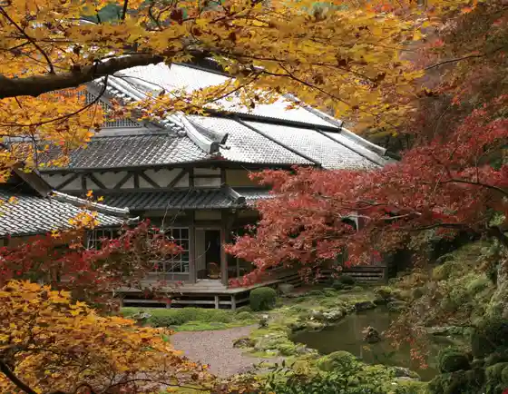
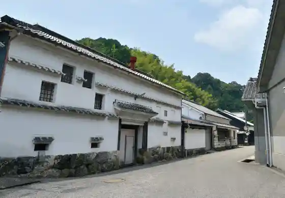
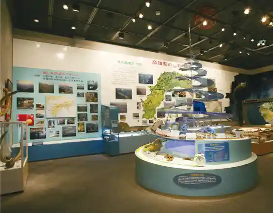

Makino Park
Sakawa, Kochi · 0889-20-9500 · Official / source link
Ao Gen Tera
Sakawa, Kochi · 0889-22-3545 · Official / source link

Tsukasa Botan Shuzo
Sakawa, Kochi · 0889-22-1211 · Official / source link

Sakawa Chishitsu Kan
Sakawa, Kochi · 0889-22-5500 · Official / source link

Sakawa Town Hall
Sakawa, Kochi · 0889-22-7700 · Official / source link
Kyu Hamaguchi Ie House
Sakawa, Kochi · 0889-20-9500 · Official / source link
Take Village Ie House
Sakawa, Kochi · 0889-20-9500 · Official / source link
Aoyama Bunko
Sakawa, Kochi · 0889-22-0348 · Official / source link
Makino Tomitaro Furusato Kan
Sakawa, Kochi · 0889-20-9800 · Official / source link
Sakawa Bunko Ko Sha (Kyu Aoyama Bunko)
Sakawa, Kochi · 0889-22-1110 · Official / source link
Mei Kyo Kan
Sakawa, Kochi · 0889-22-1110 · Official / source link
Kyu Take Village Gofuku Mise (Kirin Kan)
Sakawa, Kochi · 0889-22-9160 · Official / source link
Mei Kyo Yakatato
Sakawa, Kochi · Official / source link
Ito Ran Hayashi no Terakoya
Sakawa, Kochi · 0889-22-1110 · Official / source link
Shakudo Toge
Sakawa, Kochi · Official / source link
Sakawa Ritsu Sakura Za
Sakawa, Kochi · 0889-22-7878 · Official / source link
Kinpo Shrine
Sakawa, Kochi · Official / source link
Jo Dai Tera
Sakawa, Kochi · 0889-22-0633 · Official / source link
Naumankarusuto
Sakawa, Kochi · 0889-22-1110 · Official / source link
Kokuzo Yama Tourist Farm Furutsu Land
Sakawa, Kochi · Official / source link
Goi Yama Green Park
Sakawa, Kochi · Official / source link
Ryuo Park
Sakawa, Kochi · Official / source link
Tsuchimoto Kanko Orchard
Sakawa, Kochi · 0889-22-0206 · Official / source link
Fudogaiwaya Dokutsu Iseki
Sakawa, Kochi · 0889-22-1110 · Official / source link
Furuhata Tanada
Sakawa, Kochi · Official / source link
Kishi Ya Ato
Sakawa, Kochi · 0889-20-9500 · Official / source link
Kamo Chiku Baikaoren Gunsei Chi
Sakawa, Kochi · 0889-20-9302 · Official / source link
Maki no San no Roadside Station Sakawa
Sakawa, Kochi · 0120-117-188 · Official / source link
Sakawa Omocha Art Museum
Sakawa, Kochi · 0889-20-9977 · Official / source link
Uemachi Eki (Sakawa Tourism Association)
Sakawa, Kochi · 0889-20-9500 · Official / source link